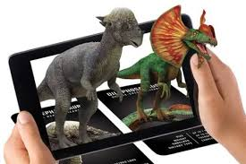
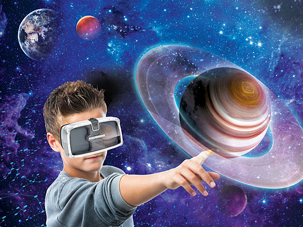
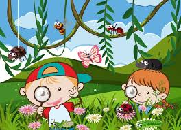

¡Bienvenidos a Nuestro Mundo de Diversión!
Aquí aprenderemos, jugaremos y cantaremos sin parar. ¡Prepárate para la aventura!
¡Vamos a Jugar al Memorama! 🥳👋 Conoce a Nuestros Amigos
Somos un equipo de profes súper divertidos que aman enseñar y jugar. ¡Aquí todos somos amigos! Queremos que cada día sea una nueva aventura para ti.
Nuestra misión es que aprendas muchas cosas nuevas mientras te ríes a carcajadas. ¡La diversión nunca termina!
💻 ¿Qué es un EVA? ¡Nuestra Aula Mágica Digital!
¡Imagina una escuela en tu tablet o compu! 🖥️📱
Un **EVA** es como un **jardín de juegos gigante en el internet**, diseñado especialmente para que tú aprendas y te diviertas un montón. Es un **Entorno Virtual de Aprendizaje**, ¡pero a nosotros nos gusta llamarlo nuestra **Aula Mágica Digital**!
Aquí podrás encontrar:
- 🎮 **Juegos educativos:** ¡Para que las letras y los números sean pura diversión!
- 🎬 **Videos con cuentos y canciones:** ¡Historias increíbles y melodías pegadizas!
- 🎨 **Actividades interactivas:** Para pintar, dibujar y crear con tus propias manitas virtuales.
- 👫 **Amigos:** A veces, también podemos aprender y jugar con otros niños.
Todo esto está guardado en la computadora para que puedas jugar y aprender ¡cuando quieras y donde quieras! Es seguro y siempre está listo para tu próxima aventura de aprendizaje.
🌐 Nuestra Cultura Digital: ¡Juega y Aprende Seguro!
¡El mundo de la tecnología es genial! 🚀
La **Cultura Digital** es todo lo que hacemos cuando usamos tablets, celulares, computadoras o cualquier aparato que se conecta al internet. Es como aprendemos, jugamos, dibujamos y nos comunicamos con la ayuda de la tecnología.
En este mundo digital, es importante:
- ✨ **Crear:** ¡No solo ver, sino también dibujar, hacer música o inventar historias!
- 👨👩👧👦 **Compartir con Cuidado:** Siempre pedir permiso a mamá o papá antes de compartir algo.
- 🔒 **Estar Seguro:** Si algo te parece raro o te da miedo, ¡cuéntale a un adulto de inmediato!
- ⏰ **Jugar con Tiempo:** Es divertido, pero también hay que jugar afuera y leer libros.
❓ ¡Preguntas del Mundo Digital!
¿Tienes curiosidad? ¡Toca las preguntas para descubrir sus respuestas secretas!
¡Porque te ayuda a aprender muchísimas cosas nuevas! Puedes ver videos educativos, jugar juegos que te enseñan y hablar con tus profes. ¡Es como tener una biblioteca y un salón de juegos en tus manos!
Es un lugar donde todo está conectado. Puedes ver cosas de lejos, hablar con amigos aunque estén lejos y encontrar información muy rápido. ¡Siempre está cambiando y creciendo!
¡Sí! Cuando ves tus caricaturas favoritas en la tablet, hablas con tus abuelitos por videollamada o juegas un juego educativo, ¡estás usando el mundo digital en tu día a día! También te ayuda a descubrir cosas nuevas.
¡Porque hace el aprendizaje más divertido y fácil! Puedes ver videos que te explican las cosas, hacer actividades interactivas y hasta investigar tus temas favoritos con ayuda de los profes. ¡Aprender es una aventura digital!
**¡Cosas buenas!** ✨ Puedes aprender, jugar, ver cuentos y hablar con gente que está lejos.
**¡Cosas no tan buenas!** 🛑 A veces hay cosas que no son para niños, o podemos pasar mucho tiempo pegados a la pantalla. Por eso, ¡siempre debe haber un adulto cerca y hay que jugar un poquito de todo!
¡Ahora podemos hacer videollamadas para ver a la abuela aunque esté lejos! O mandar dibujitos a los amigos. Las computadoras y tablets nos ayudan a estar conectados con gente de todo el mundo. ¡Es como magia!
🏫 Escuela en Casa vs. Escuela en el Salón
¡Ambas son muy buenas para aprender! Mira sus diferencias para saber cuál te gusta más.
Escuela en el Salón 👩🏫

- ✅ **Ventajas:**
- ✨ Haces amigos y juegas en persona.
- ✨ Los profes te ayudan al instante.
- ✨ Hay muchas actividades divertidas en grupo.
- ❌ **Desventajas:**
- 🛑 Tienes que ir a un lugar específico.
- 🛑 Hay horarios fijos que no cambian.
- 🛑 A veces hay más ruido y distracciones.
Escuela en Casa 💻
- ✅ **Ventajas:**
- ✨ Aprendes desde tu casita, muy cómodo.
- ✨ Puedes ir a tu propio ritmo.
- ✨ Usas juegos y videos interactivos.
- ❌ **Desventajas:**
- 🛑 A veces extrañas jugar con tus amigos en persona.
- 🛑 Necesitas que un adulto te ayude con la computadora.
- 🛑 Puede ser fácil distraerse en casa.
¡Lo importante es siempre aprender y divertirse, no importa dónde! ✨
💡 ¿Qué es la Metodología SOLE? ¡Aprende Explorando!

¡Aprender preguntando y descubriendo! 🧐
La **Metodología SOLE** es una forma muy especial y divertida de aprender. Imagina que tienes una pregunta súper interesante, ¡y en lugar de que el profe te dé la respuesta, la buscas tú mismo!
Así funciona:
- ❓ **Gran Pregunta:** El profe te hace una pregunta que te da mucha curiosidad, ¡como si hay vida en otros planetas!
- 🕵️♀️ **A Investigar:** Con tu tablet o computadora y tus amigos, ¡buscan las respuestas en el internet! El profe solo observa y ayuda si es necesario.
- 🗣️ **A Contar:** Después, cada grupo comparte lo que descubrió con todos los demás. ¡Así aprenden juntos!
¡Es una aventura de aprendizaje donde tú eres el explorador principal! Te ayuda a ser muy curioso y a encontrar las respuestas por ti mismo.
👓 ¡Realidad Mágica! ¿Qué son RA y RV?
¡Descubre cómo la tecnología nos muestra cosas increíbles de nuevas maneras!
¡Imagina que estás viendo tu sala y, de repente, aparece un dinosaurio virtual junto a tu sofá! 🦕 La **Realidad Aumentada** es cuando tu tablet o celular usa su cámara para poner dibujos o cosas virtuales en el mundo real, como si estuvieran ahí.
Tecnología necesaria: un celular o tablet con cámara especial.
¡Ponte unas gafas especiales y, de repente, estás en otro mundo! 🌌 La **Realidad Virtual** te lleva a un lugar completamente diferente, que solo existe en la computadora. Puedes estar en la Luna, en el fondo del mar o dentro de un videojuego. ¡Es como si de verdad estuvieras ahí!
Tecnología necesaria: unas gafas de Realidad Virtual.
La **RA** (Aumentada) mezcla el mundo real con cosas virtuales, ¡vemos los dos al mismo tiempo! Como si un personaje de un juego apareciera en tu sala.
La **RV** (Virtual) te lleva a un mundo totalmente creado por la computadora, ¡solo ves lo que las gafas te muestran! Es como transportarte a otro lugar sin moverte de tu silla.
La RA funciona con la cámara de tu celular o tablet. La cámara ve el mundo real, y el aparato pone dibujos digitales encima. ¡Es como un filtro mágico!
**Necesitas:** 📱 Un **celular o tablet** con cámara, y una **aplicación especial** que haga la magia.
La RV funciona con unas **gafas especiales** que cubren tus ojos. Dentro de las gafas hay pantallas que te muestran un mundo hecho por la computadora, ¡así crees que estás ahí!
**Necesitas:** 👓 Unas **gafas de Realidad Virtual** (a veces se usa también una computadora o un celular con ellas) y un **juego o video especial** para RV.
🧊 ¡Explora el Cubo Mágico! (Simulación de RA)
Imagina que este cubo es el "Merge Cube". Usa tu ratón para girarlo y haz clic en los botones para ver cómo se transforma y muestra cosas mágicas. ¡Es como la Realidad Aumentada en tus manos!
🌟 Educación Híbrida: ¡Aprender de las Dos Maneras!
¡La mejor mezcla de la escuela y el hogar! 🏫🏠
La **Educación Híbrida** es como tener lo mejor de dos mundos: a veces vas a la escuela para jugar y aprender con tus amigos y profes en persona, ¡y otras veces aprendes desde tu casa con tu computadora o tablet!
Así, puedes:
- 👩🏫 **Ir al Salón:** Para ver a tus amigos, correr en el patio y hacer actividades con los profes en la escuela.
- 💻 **Aprender en Casa:** Para ver videos, jugar juegos educativos en tu tablet y aprender a tu propio ritmo.
- 🤝 **Conectar:** Estar siempre cerca de tus profes y compañeros, ¡no importa dónde estés!
¡Es una forma muy flexible y divertida de seguir aprendiendo un montón cada día!
🧠 ¡Juega al Memorama de Jardín! ($4 \times 4$)
¡Encuentra los pares de animales, flores y plantas del jardín para ganar! ¡Pon a prueba tu memoria y diviértete!
¡Encuentra los pares! 🌱
🌳 Aventura en el Jardín Virtual: Un Viaje Inmersivo
1. Descripción de la Actividad
Esta actividad didáctica sumergirá a los niños en un **Jardín Virtual interactivo** utilizando gafas de Realidad Virtual. Los estudiantes se convertirán en pequeños exploradores y podrán pasear libremente por un entorno natural digital lleno de vida.
En este jardín virtual, los niños podrán:
- **Observar y Descubrir:** Encontrarán diferentes tipos de animales (insectos, aves, pequeños mamíferos), una variedad de flores de distintos colores y tamaños, y diversas plantas y árboles.
- **Interacción Activa:** Al "mirar" (o enfocar con un cursor visual en RV) un animal, una flor o una planta específica, se activará una pequeña interacción:
- Aparecerá el nombre del elemento (ej. "Mariposa", "Girasol", "Roble").
- Se escuchará un sonido característico (canto de pájaro, zumbido de abeja).
- Una breve animación que muestre una característica (la mariposa revolotea, el girasol gira hacia el sol).
- Opcionalmente, se podría escuchar un dato curioso simple sobre ese elemento.
- **Exploración Guiada y Libre:** Inicialmente, el docente podría guiar el recorrido para asegurar que todos vean los elementos clave. Luego, se permitiría la exploración libre, animando a los niños a descubrir nuevos elementos y a interaccionar con ellos.
2. Objetivos de Aprendizaje
- **Objetivos de Conocimiento:**
- Identificar y nombrar al menos 5 tipos diferentes de animales, 5 flores y 3 plantas/árboles presentes en el jardín virtual.
- Reconocer algunos sonidos asociados con los animales del jardín.
- Comprender la diversidad de la vida en un ecosistema de jardín.
- **Objetivos de Habilidades:**
- Desarrollar habilidades de observación y atención a los detalles.
- Mejorar la orientación espacial y la navegación en un entorno 3D.
- Fomentar la curiosidad y la iniciativa en el aprendizaje a través de la exploración.
- Desarrollar la alfabetización digital básica a través de la interacción con la tecnología de RV.
- **Objetivos de Actitudes:**
- Fomentar el respeto y la apreciación por la naturaleza y los seres vivos.
- Desarrollar una actitud positiva hacia el aprendizaje interactivo y las nuevas tecnologías.
- Estimular el trabajo en equipo y la comunicación al compartir descubrimientos.
3. Implementación de la Actividad
3.1. Materiales Necesarios
- **Gafas de Realidad Virtual:** Se pueden usar desde soluciones económicas como Google Cardboard (con smartphones compatibles) hasta dispositivos más avanzados como Oculus Go/Quest si se cuenta con el presupuesto. Para un aula, Cardboard con smartphones sería una opción accesible.
- **Smartphones/Tablets:** Si se usa Cardboard, se necesitarán dispositivos móviles con la aplicación del jardín virtual instalada.
- **Aplicación de Jardín Virtual:** Una app de RV educativa que simule un jardín interactivo. Podría ser una aplicación preexistente o una desarrollada específicamente para la actividad.
- **Espacio Seguro y Tranquilo:** Un área en el aula o un espacio común donde los niños puedan usar las gafas sin riesgo de tropezar o golpearse, preferiblemente sentados.
- **Auriculares (opcional pero recomendado):** Para una experiencia más inmersiva y para minimizar distracciones.
- **Material para la Post-Actividad:** Hojas de dibujo, lápices de colores, plastilina, etc.
3.2. Desarrollo de la Actividad
- **Introducción y Preparación (10 minutos):**
- **Explicación de la RV:** El docente introduce qué es la Realidad Virtual de forma sencilla ("¡Es como si te transportaras a otro lugar sin moverte de aquí!").
- **Normas de Seguridad:** Establecer reglas claras: no correr con las gafas puestas, sentarse quietos, levantar la mano si sienten mareo o necesitan ayuda.
- **Objetivo de la Misión:** Explicar que la misión es explorar un jardín virtual y descubrir sus secretos.
- **Colocación de Gafas:** Ayudar a cada niño a colocarse las gafas y los auriculares (si se usan).
- **Fase de Exploración Guiada (15 minutos):**
- El docente inicia la aplicación en cada dispositivo.
- Inicialmente, el docente puede dar instrucciones verbales generales ("Ahora miren hacia adelante, ¿qué ven?", "Busquen una flor roja"). Esto ayuda a los niños a familiarizarse con la navegación y la interacción.
- Observar a los niños y brindar asistencia individual cuando sea necesario.
- **Fase de Exploración Libre (15 minutos):**
- Permitir que los niños exploren el jardín a su propio ritmo, animándolos a interactuar con diferentes elementos.
- Circular por el aula, observando los descubrimientos de los niños y haciendo preguntas que estimulen la conversación ("¿Qué encontraste?", "¿Escuchaste ese sonido?").
- **Post-Actividad y Reflexión (20 minutos):**
- **Retiro de Gafas:** Ayudar a los niños a quitarse las gafas de RV de forma segura.
- **Puesta en Común:** Abrir un espacio para que los niños compartan sus experiencias:
- "¿Qué animales o plantas vieron que les gustaron más?"
- "¿Qué sonidos escucharon?"
- "¿Aprendieron algo nuevo?"
- **Actividad Creativa:** Pedir a los niños que dibujen lo que más les gustó del jardín virtual o que modelen un animal o flor con plastilina.
- **Conexión con el Mundo Real:** Relacionar lo visto en la RV con jardines reales que conozcan o con la naturaleza cercana. Hablar sobre la importancia de cuidar las plantas y los animales.
3.3. Adaptaciones y Diferenciación
- **Para niños más pequeños (Preescolar):** Simplificar las interacciones, enfocarse más en la observación visual y los sonidos. Las sesiones de RV deben ser más cortas.
- **Para niños mayores (Primer Ciclo Primaria):** Añadir más datos curiosos al interactuar con los elementos. Incluir una "lista de búsqueda" de elementos específicos para encontrar. Fomentar la escritura de lo que aprendieron.
- **Para necesidades educativas especiales:** Brindar apoyo individualizado, permitir más tiempo de adaptación a la RV, y ajustar los objetivos según las capacidades de cada niño. Asegurarse de que el entorno RV sea accesible y no genere sobrecarga sensorial.
Esta actividad no solo introduce a los niños a la tecnología de Realidad Virtual de una manera segura y controlada, sino que también enriquece su aprendizaje sobre la naturaleza de una forma inolvidable y multisensorial.
🎧 ¡Mi Podcast de Aventuras!
¡Bienvenidos a nuestro rincón de historias y sonidos mágicos! Aquí podrás escuchar cuentos, canciones divertidas y aprender cosas increíbles mientras exploramos el mundo juntos. ¡Sube el volumen y prepárate para la aventura auditiva!
Esperamos que disfrutes de este pequeño adelanto. ¡Pronto tendremos muchas más historias para ti!
📝 Planeación Docente: Herramientas para los Profes
Aquí encontrarás un ejemplo de planificación para integrar actividades lúdicas y tecnológicas en el aula.
¡Esperamos que esta herramienta te inspire a crear experiencias de aprendizaje mágicas para tus estudiantes!